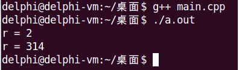

在进行面向对象分析时，会发现一些抽象的概念，比如图形Shape，要想计算图形的面积，就必须先知道具体的图形类型，因为对概念上的“图形”求面积是没有意义的。
在面向对象理论中，现实世界中的抽象概念可以用抽象类表示
C++没有抽象类的概念，而是通过纯虚函数来实现抽象类，纯虚函数是指只定义函数原型的成员函数，语法规则为：
class Shape
{
public:
virtual double area() = 0; // "=0"用于告诉编译器当前是声明纯虚函数，不需要定义函数体
};#include <iostream>
#include <string>
using namespace std;
class Shape
{
public:
virtual double area() = 0;
};
class Rect : public Shape
{
int ma;
int mb;
public:
Rect(int a, int b)
{
ma = a;
mb = b;
}
double area()
{
return ma * mb;
}
};
class Circle : public Shape
{
int mr;
public:
Circle(int r)
{
mr = r;
}
double area()
{
return 3.14 * mr * mr;
}
};
void area(Shape *p)
{
double r = p->area();
cout << "r = " << r << endl;
}
int main()
{
Rect rect(1, 2);
Circle circle(10);
area(&rect);
area(&circle);
return 0;
}
如果一个C++类满足下面的条件，则这个类被称为接口（Interface）。
接口是一种特殊的抽象类。
class Interface
{
public:
virtual bool open() = 0;
virtual void close() = 0;
virtual bool send(char *buf, int len) = 0;
virtual int receive(char *buf, int len) = 0;
};